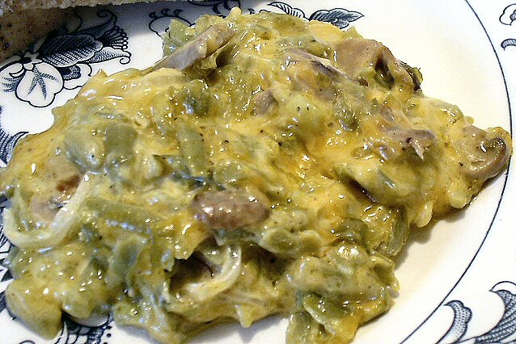

HOME
The Fucking Best Vegan G.B.C (Green Bean Casserole)

Description
Relive the canned glory that is known as GBC, just as your GM (grandma) made it. This depressin-era dish will dissolve your displeasure.
You really shouldn't use any fresh ingredients.
Ingredients
- 4 cans of FRENCH CUT GBs
- 1 carton unflavored plain soymilk
- Mushrooms
- 1 can of fried onions
- Spices and such
- Herbs
- other shit
Steps
- Dump cans into colinder
- Sautee mushrooms in kinda deep pot
- Make a roux with mushrooms
- Dump in soymilk and thicken to soup consistency
- Put the GBs into pyrex try, dump soymilk concoction, and top with friend onyos.
- Bake at 350 freedom units for like, 30 min